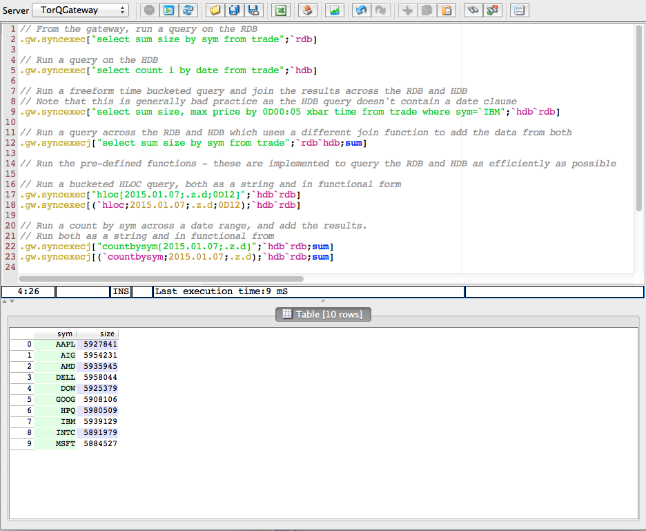

Have a Play
Gateway
Queries
Some example queries have been implemented on the RDB and HDB processes. These are defined in $KDBCODE/rdb/examplequeries.q and $KDBCODE/hdb/examplequeries.q. These can be run directly on the processes themselves, or from the gateway which will join the results if querying across processes. To test, connect to the gateway process running on port 6007 from q process, qcon or from an IDE. An example is shown below running from an IDE.

Example queries are listed below.
// From the gateway, run a query on the RDB
.gw.syncexec["select sum size by sym from trade";`rdb]
// Run a query on the HDB
.gw.syncexec["select count i by date from trade";`hdb]
// Run a freeform time bucketed query and join the results across the RDB and HDB
// Note that this is generally bad practice as the HDB query doesn't contain a date clause
.gw.syncexec["select sum size, max price by 0D00:05 xbar time from trade where sym=`IBM";`hdb`rdb]
// Run a query across the RDB and HDB which uses a different join function to add the data from both
.gw.syncexecj["select sum size by sym from trade";`rdb`hdb;sum]
// Run the pre-defined functions - these are implemented to query the RDB and HDB as efficiently as possible
// Run a bucketed HLOC query, both as a string and in functional form
.gw.syncexec["hloc[2015.01.07;.z.d;0D12]";`hdb`rdb]
.gw.syncexec[(`hloc;2015.01.07;.z.d;0D12);`hdb`rdb]
// Run a count by sym across a date range, and add the results.
// Run both as a string and in functional from
.gw.syncexecj["countbysym[2015.01.07;.z.d]";`hdb`rdb;sum]
.gw.syncexecj[(`countbysym;2015.01.07;.z.d);`hdb`rdb;sum]
// Run a gateway query with a bespoke join function to line up results and compare today's data with historic data
.gw.syncexecj[(`countbysym;2015.01.07;.z.d);`hdb`rdb;{(`sym xkey select sym,histavgsize:size%tradecount from x 0) lj `sym xkey select sym,todayavgsize:size%tradecount from x 1}]
// Send a query for a process type which doesn't exist
.gw.syncexec["select count i by date from trade";`hdb`rubbish]
// Send a query which fails
.gw.syncexec["1+`a";`hdb]
Resilience
The gateway handles backend processes failing and restarting. To test it:
-
Manually kill one of the HDB processes (close the process on Windows, use the kill command on Linux or OS X)
-
Run one of the gateway queries which uses an HDB
-
Kill the remaining HDB process
-
Re-run the query- the gateway should return a failure error
-
Restart one of the HDB processes. To do this either run the correct individual line from the start script, or run the full start script.
-
Re-run the gateway query- it should be successful
Check the monitor for changes when killing and restarting processes.
Load Balancing
New processes can be dynamically added and they will register with the gateway which will start running queries across them. To test it, create 3 client q processes which run queries against the gateway as below. Note that the code below could be pasted into a q script and run for each client.
// open a connection
q)h:hopen `::6007:admin:admin
// function that will take 5 seconds to run on the HDB
q)f:{system $[.z.o like "w*";"timeout ";"sleep "],string x}
// function that will query the gateway
q)g:{(neg h)(`.gw.asyncexec;(f;x); `hdb); h[]}
// run the query, print the time
q)sendquery:{-1"query took ",(string (system"t g[",(string r),"]")%10*r:1+rand 5),"% of expected time";}
q)do[100;sendquery[]]
Each client is trying to run a query on the HDB which takes 5 seconds. There are 3 clients, and only 2 HDB processes sitting behind the gateway. Each query will therefore take between 5 and 10 seconds, depending on arrival time. As the number of clients increases, the average time will increase.
Assuming the environment variables are set up, a new HDB process can be started like this:
q torq.q -load hdb -p 31302 -U appconfig/passwords/accesslist.txt -o 0 -proctype hdb -procname temphdb -debug
This will automatically connect to the gateway, and allow more queries to be run in parallel.
Examine the Logs
Each process writes logs to $KDBLOG. These are standard out, standard error, and usage logs. The usage logs are also stored in memory by default, in the .usage.usage table. The table can be used to analyze which queries are taking a long time, which users are sending a lot of queries, the memory usage before and after each query, which queries are failing etc.
Reports
The Reporter process has a set of default “reports” configured in $KDBCONFIG/reporter.csv. These are:
-
A memory check which runs periodically against the RDB and emails an alert if the memory usage goes above a certain size
-
A count check which runs periodically against the RDB and emails an alert if a certain number of updates haven’t been received by a certain set of tables within a given period
-
A date check which runs periodically against the HDB after end-of-day and raises an alert if the HDB date range isn’t as expected
-
An example end-of-day report which runs against the RDB at a specific time and produces a csv report of high, low, open and close prices per instrument and emails it
-
The same example end-of-day report as above but running against the gateway which then forward it to the RDB
The config can be modified to change the reports that are run. Some example modifications would be changing the thresholds at which alerts are generated, how often they are run, and what is done with the results. New reports can also be created. The report process will need to be restarted to load the new configuration.
Access Control
Adding Users
For simplicity each process is password protected using the file $KDBAPPCONFIG/passwords/accesslist.txt file. This can be modified to have different access lists for each process. To add a new user, add their user:password combination to the file and either restart the process (remembering to stop the stack and source setenv.sh before restarting the stack) , or execute
q)\u
within the process.
User Privileges
TorQ possesses utilities for controlling user access in the form of different user identities with different access levels. For more information on how to configure this, see the “Message Handlers” section in the main TorQ document.